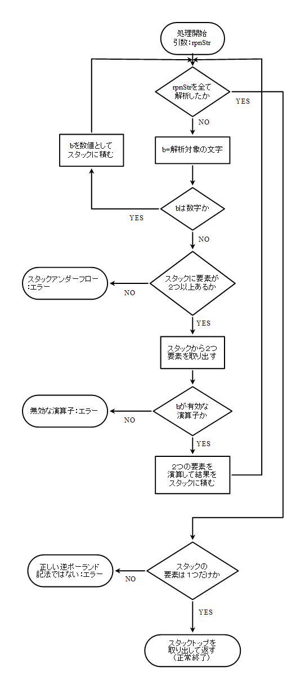

『（1と4を足したもの）と（3と7を足したもの）を乗算してその結果を5で割ったもの』と書けます。
//CSudoDiv.h
//仮想分数
class SudoDiv{
private:
int num;//分子
int den;//分母
public:
//コンストラクタ
SudoDiv(){
setMember(0,0);
}
SudoDiv(int numerator,int denominator){
setMember(numerator,denominator);
}
//デストラクタ
virtual ~SudoDiv(){}
//メンバ設定用関数
void setMember(int numerator,int denominator){
num=numerator;
den=denominator;
}
public:
//メンバ設定用「()」
void operator()(int numerator,int denominator){
setMember(numerator,denominator);
}
//四則演算
//「+」
SudoDiv operator+(const SudoDiv& sd){
SudoDiv t;
t.num=num*sd.den+sd.num*den;
t.den=den*sd.den;
return t;
};
//「-」
SudoDiv operator-(const SudoDiv& sd){
SudoDiv t;
t.num=num*sd.den-sd.num*den;
t.den=den*sd.den;
return t;
};
//「*」
SudoDiv operator*(const SudoDiv& sd){
SudoDiv t;
t.num=num*sd.num;
t.den=den*sd.den;
return t;
};
//「/」
SudoDiv operator/(const SudoDiv& sd){
SudoDiv t;
t.num=num*sd.den;
t.den=den*sd.num;
return t;
};
//値の取得
double getValue(){
return num/(double)den;
}
};
分数の四則演算を定義しておくと自然に計算できます。
//RPN.cpp
//逆ポーランド記法を解く
double RPN(String rpnStr){
//逆ポーランド用スタック
stack<SudoDiv> byteStack;
SudoDiv t;
byte b;
//全文字チェック
for(int i=0,s=rpnStr.size();i<s;i++){
//解析対象の文字
b=rpnStr[i];
//数値ならスタックに積む
if(isdigit(b)){
uint n=b-'0';
t(n,1);
byteStack.push(t);
continue;
}
//演算子なら
//スタックアンダーフローチェック
if(byteStack.size()<2)throw "Stack underflow : error";
//スタックから２つ取り出す
SudoDiv t1,t2;
t1=byteStack.top();
byteStack.pop();
t2=byteStack.top();
byteStack.pop();
//演算して結果をスタックに積む
switch(b){
case '+':{
byteStack.push(t2+t1);
break;
}
case '-':{
byteStack.push(t2-t1);
break;
}
case '*':{
byteStack.push(t2*t1);
break;
}
case '/':{
byteStack.push(t2/t1);
break;
}
default:throw "Invalid operator : error";
}
}
//逆ポーランド記法チェック
if(byteStack.size()!=1)throw "Invalid syntax : error";
//結果取得
t=byteStack.top();
byteStack.pop();
//結果を返す
return t.getValue();
}
|
フローチャート  |